SQL数据库
数据管理技术
发展阶段
- 人工管理阶段
- 文件系统阶段
- 电子表格阶段
- 数据库系统阶段
数据库模型发展历史
- 层次模型：把数据组织成一棵根在上，叶在下的有向树
- 网状模型：把数据组织成无环有向图
- 关系模型：把数据组织成表间有冗余列的表
- 对象-关系模型：用对象的方法组织数据
程序与数据的独立性
- 逻辑独立性：应用程序与数据库的逻辑结构相互独立
- 物理独立性：应用程序与存储在磁盘上的数据库中的数据相互独立
- 外模式/模式:逻辑独立性
- 模式/内模式:物理独立性
DBMS
Database Management System, DBMS提供4方面数据控制功能：
- Security: 数据的安全性保护
- Integrity: 数据的完整性检查
- Concurrency: 并发控制
- Recovery: 数据库恢复
DBS结构
DBS(Database System)包括：
- DB(Database)
- DBMS
- AP(Applicatio Programs)
DBS组成成分
- 硬件：内存，外存，数据传输率
- DB
- 软件：OS，DBMS，以DBMS为核心的应用开发工具，高级语言+编译系统，数据库应用系统
- 人：数据库管理员，应用程序员，最终用户(临时用户:用SQL访问DBMS初级用户:用菜单访问DBMS)
关系数据模型
基本概念
数据模型(Data Model)：是用来抽象,表示和处理现实世界中的数据和信息的工具。
数据模型三要求：
- 能比较真实地模拟现实世界
- 容易为人所理解(对用户)
- 便于在计算机上实现(对开发者)
对比：
数据结构的三要素：
- 逻辑结构：对数据间关系的描述， 与数据的存储无关， 独立于计算机
- 运算：定义在数据的逻辑结构上， 具体实现在存储结构上的操作要求
- 存储结构：逻辑结构在计算机存储器里的实现， 依赖于计算机
数据库的数据模型的三要素(关系模型三要素)：
- 数据结构
- 数据操作
- 数据完整性约束
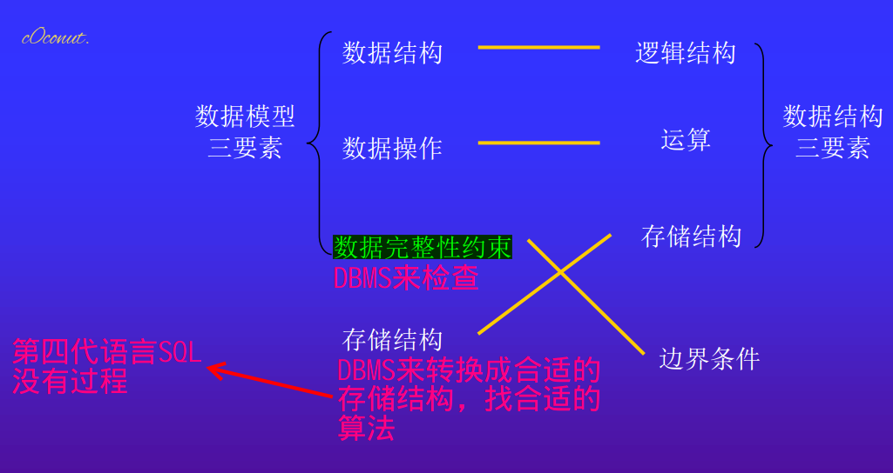
关系模型详解
关系数据库建立在关系模型上，关系模型的本质是若干个二维表。
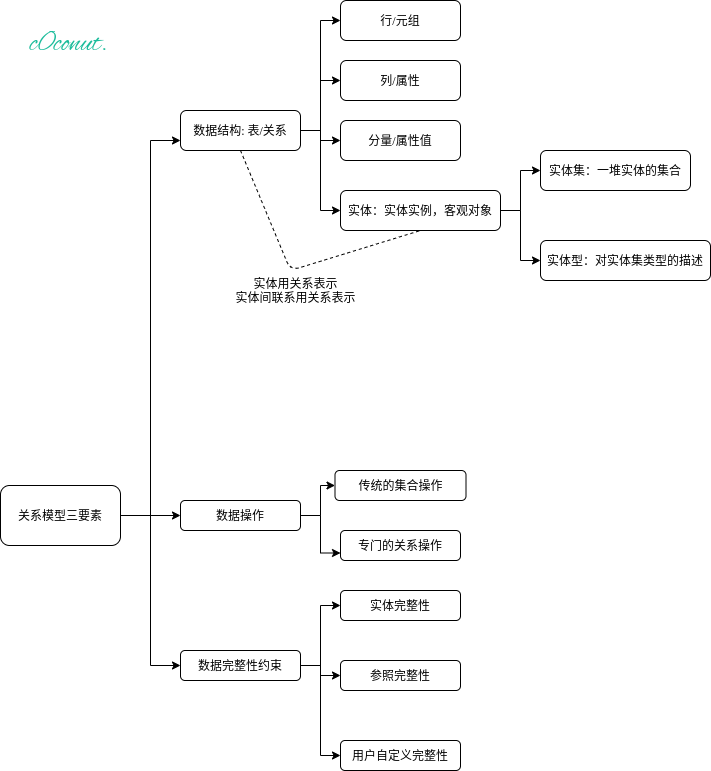
数据库各部分术语
- 标题/关系模式(heading of a table)： 组成关系的属性名的集合
- 数据库模式(database schema): 数据库的所有关系模式的集合
- 关系的内容： 关系中的元组集合
- 关系的基数(cardinality):关系中元组(行)个数
- 关系的度(degree): 关系中的属性(列)个数
- 域(domains)：属性的取值范围。DBS通过属性的数据类型支持域。当定义一个表的时候，会为每个列指派一种数据类型（如字符型或者是整型），这些数据类型提供了一个广泛域。SQL-92标准引入了用户自定义域的概念。数据库管理系统将不会保存那些违背约束的数据信息。
笛卡尔积
有集合A，B A = {0,1} B = {2,3,4}
A×B和B×A的结果是两个集合相乘的笛卡尔积
A×B = {（0，2），（1，2），（0，3），（1，3），（0，4），（1，4）}；
B×A = {（2，0），（2，1），（3，0），（3，1），（4，0），（4，1）}；
- 笛卡尔积不满足交换率，既 A×B ≠ B×A
- 两个集合笛卡尔积得到的新集合的元素个数是： A集合的元素个数 × B集合的元素个数
- AxB是有（0，2），BxA是有（2，0）
关系的完整性约束
关系完整性约束： 关系模型中的一些规则，告诉我们在表结构中哪些变化是允许的，哪些检索操作是受限的。
完整性约束条件： 加在数据库数据之上的语义约束条件。
完整性约束条件分类
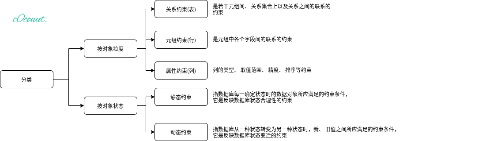
关系的性质
- 关系名唯一
- 属性名唯一
- 属性的顺序并不重要
- 理论上来说， 元组的顺序不重要（但实际上，这个顺序将影响对元组的访问效率）
- 单值属性：关系的分量仅包含一个原子（单一）值
- 非结构属性：同一属性中的各个值都取自相同的域
- 元组唯一：各个元组互不相同，不存在重复的元组
完整性约束规则
第一范式规则
在定义的表中,关系模型坚持不允许含有多值属性(有时称为重复字段)和含有内部结构(比如记录类型)的列
基于内容存取规则
基于内容存取行。
数学上的合理性：行是没有次序的。
行唯一性规则
关系中任何两个元组(表中的行)的值在同一时刻不能是完全相同的
实体(行)完整性规则
表T中的任意行在主键列的取值都不允许为空
基本概念
超键: 超键是能唯一区分任意两行数据的列或多个列
键(key, candidate key):给定一个表T， 标题Head(T)=A1…An。 表T的一个键， 有时也称为候选键， 是具有以下两个特征的一组属性的集合K=Ai1…Aik:
-
- 如果u,v是T中两个不同的元组， 则u[K]≠v[K];
- 没有K的真子集H具有特征1）
键具有唯一标识性。键是最小超键。
主键： 被数据库设计者选择出来作为表T的行的唯一性标识符的候选键
键是客观的概念， 主键是主观的概念.
空值(NULL Value): 未知的或者尚未定义的值
参照完整性规则
外键(Foreign key):设F是基本关系R的一个或一组属性，但不是R的键。如果F与基本关系S的键KS相对应，则称F是R的外键（Foreign Key），并称R为参照关系(Referencing Relation），S 为 被 参 照 关 系（Referenced Relation）。关系R和S不一定是不同的关系。
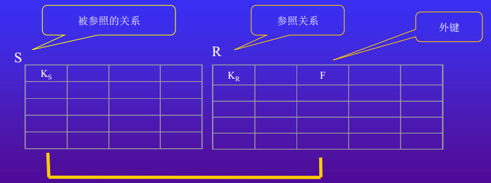
若属性（或属性组）F是基本关系R的外键，它与基本关系S的键KS相对应（关系R和S不一定是不同的关系），则对于R中每个元组在F上的值必须为：
- 或者取空值（F的每个属性值均为空值）
- 或者等于S中某个元组的主键值。
参照完整性规则用冗余属性描述了实体之间的关系，只允许外键这一种冗余属性的存在，其他尽量不允许。
例如，学生关系数据库：
学生(学号，姓名，借书卡号，年龄，所在院系)
课程(课程号，课程名，学分)
选修(学号，课程号，成绩)
中三个关系之间存在属性间的引用, 选修关系引用了学生关系的主键"学号"和课程关系的主键"课程号"。
显然，选修关系中的"学号"值必须是学生关系中实际存在的"学号"。
选修关系中的"课程号"必须是课程关系中实际存在的"课程号"。
这就满足了参照完整性规则(2), 它说明, 选修关系中的某些属性(“学号”,“课程号”)需要参照学生关系及课程关系对应的属性内容取值。
所以, 选修关系被称为依赖表/参照关系, 学生关系和课程关系被称为目标表/被参照关系。
关系代数
关系代数是一种抽象语言, 它通过对关系的运算来表达查询。关系代数以关系为运算对象，通过对关系进行"组合"或"分割", 得到所需的数据集合–一个新的关系。
关系代数可分为:
- 集合运算(并, 交, 差, 广义笛卡儿积) 以行为元素进行
- 关系运算(投影, 选择, 连接, 除运算) 不仅涉及行, 而且涉及列
- 扩充的关系运算(广义投影, 外连接, 半连接, 聚集 等)
关系代数常用的运算符:
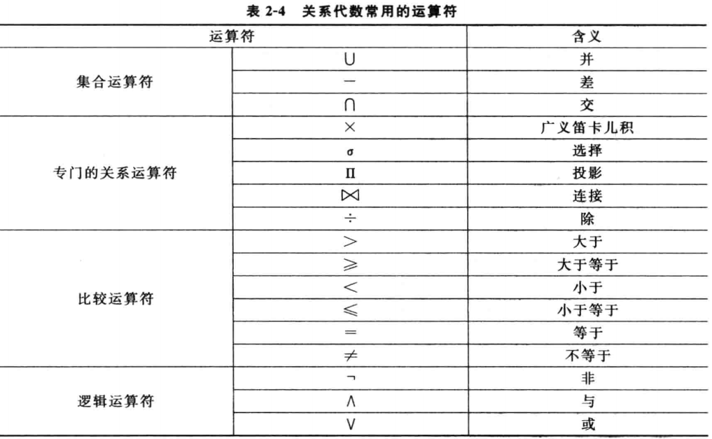
集合运算
设:t为元组变量; R, S为同类的n元关系。
同类: 两个关系有相同的列数(元),且相应的属性值取自同一个域(数姓名可以不相同)
- 并(Union): R∪ S={t|t∈ R ∨ t∈ S}
- 差(Difference): R-S={t|t∈ R ∧ t∉ S}
- 交(Intersection): R∩ S={t|t∈ R ∧ t∈ S}
- 积(Cartesian Product, 广义笛卡尔积):R为k1元关系, 有n1个元组。S为k2元关系, 有n2个元组。广义笛卡儿积的结果为k1+k2元新关系, 有n1×n2个元组。每个元组由R的一个元组(前k1列)与S的一个元组(后k2列)拼接而成。R×S={tr ts|(tr∈ R)∧(ts∈ S)}
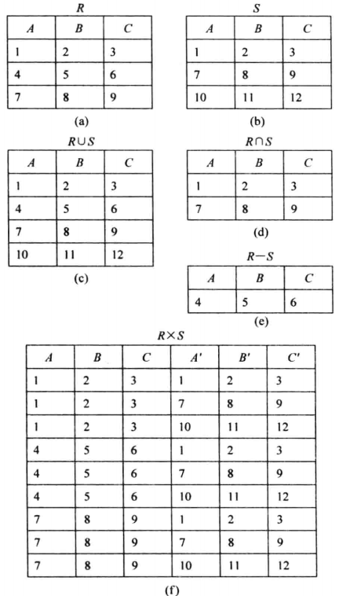
关系运算
- 选择(Selection):
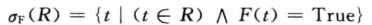
挑出满足条件F的元组。 - 投影(Projection):
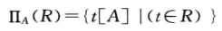
列上进行选择。R中取属性名表A中制定的列。 - 连接(Join):
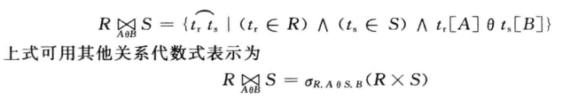
从R×S中选取R在A属性组上的值与S在B属性组上满足θ关系的元组，构成一个新关系。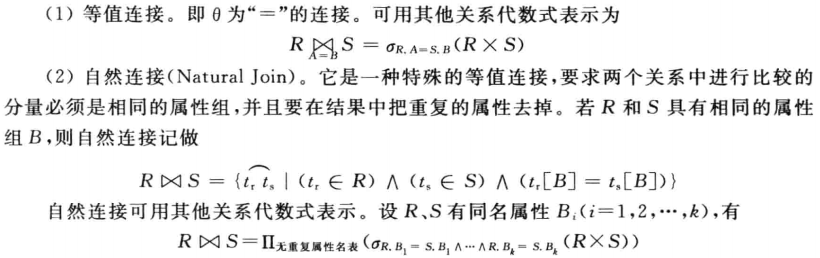
- 除(Division):
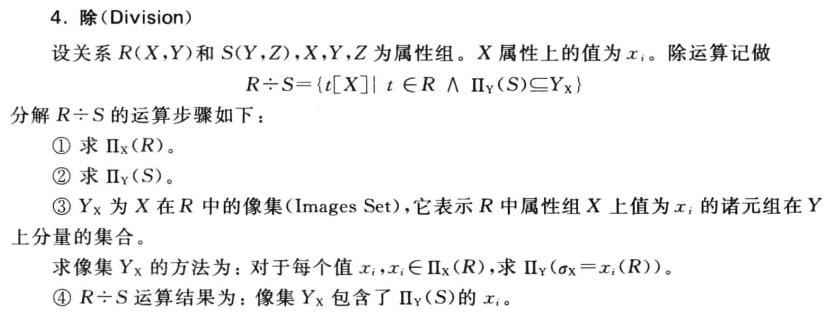
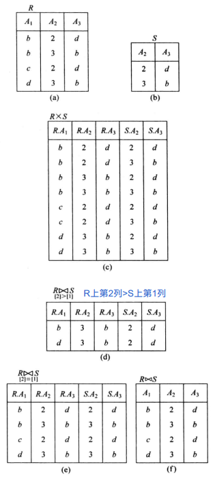
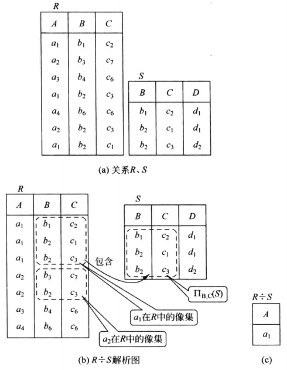
SQL语言
SQL语言格式约定：
- SQL是一种自由格式语言：它对每一行的字符数不作限定，也不要求一个SQL语句一定分成几行来写
- SQL的编译器不区分大小写；（字符常量除外）
- 以分号结束语句
如何增强SQL语句的可读性?
- 用分行、 对齐和缩进方法
- 分行：语句的每一个子句在新的一行开始书写
- 对齐：每一子句与其它子句的开始处在同一列上
- 缩进：如果子句由几个部分组成， 则它们应当出现在不同的行,并在子句开始处使用缩进方式表示这种关系
- SQL的保留字使用大写
用扩展的巴克斯范式(Backus Naur Form, BNF)定义SQL语句
- 大写字母用于表示保留字
- 小写字母用于表示用户自定义字
- 竖线( | )用于表示从选项中进行选择
- 大括号( { } )用于表示所需元素
- 中括号( [ ] )用于表示可选择元素
- 省略号( … )用于表示选择项可重复0到多次